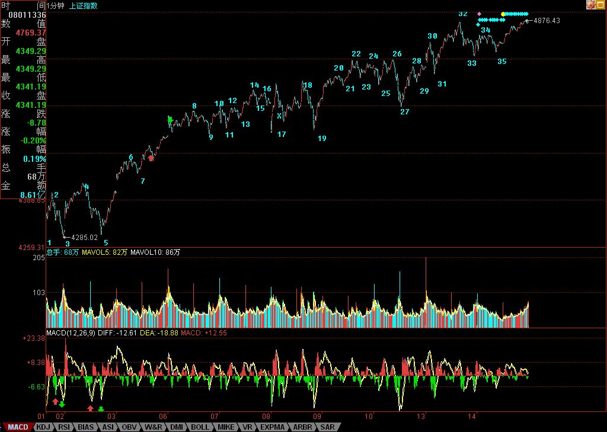

缠中说禅博客
缠中说禅 当代奇人，
一个永远只愿站立且希望探索、
展示人的所有潜能和可能的人，真实身份未明。

热点蔓延，阳光下没有新鲜事。
(2007/08/14 15:49:37 周二)
50-300-二、三线，本ID已经给股票的热点蔓延画出了线路图，现在，不过是按着线路图的一种演绎，正所谓阳光下没有新鲜事。
今天，14-27这5分钟中枢的第三买点35也总算给憋出来了（偶尔看到有问为什么不是九段？九段可延伸成5分钟中枢，可不等于5分钟中枢就一定是九段，这么简单的逻辑关系可别搞糊涂了。）
5分钟第三类买点后，只有两个选择：一、继续上涨直到形成新的5分钟中枢；二、在目前位置附近形成大一级别的30分钟中枢。
现在，关键是热点的蔓延持续，只要这没问题，一切都好办。
站在日线角度，提两个思考题：
1、目前日线的背驰段解除没有？提示，关键是哪段和哪段比，连相比的对象都没分清楚，还谈什么背驰段？更不用说什么精确定位了。
2、4174点的1/2突破后，下一条真正的压力线在哪里？
注意，本ID战略转移，并不会影响博客的一切活动，只是有时候晚上的文章，可能会因为应酬改到早上发，如此而已。而且，本ID现在是战略转移，0成本的股票是不会抛的，没到0成本的，本ID也不会胡乱抛的，没到卖点，凭什么抛？今天，能在49下买到002149的，可要感谢本ID，某人脑子进水，竟然企图让本ID在50下出来，一开盘就企图打压，脑子有水吧？这股票，本ID会抛至少一半的，但想让本ID今早49以下就抛，简直病得不轻。
今天可以回答问题到4点半。
